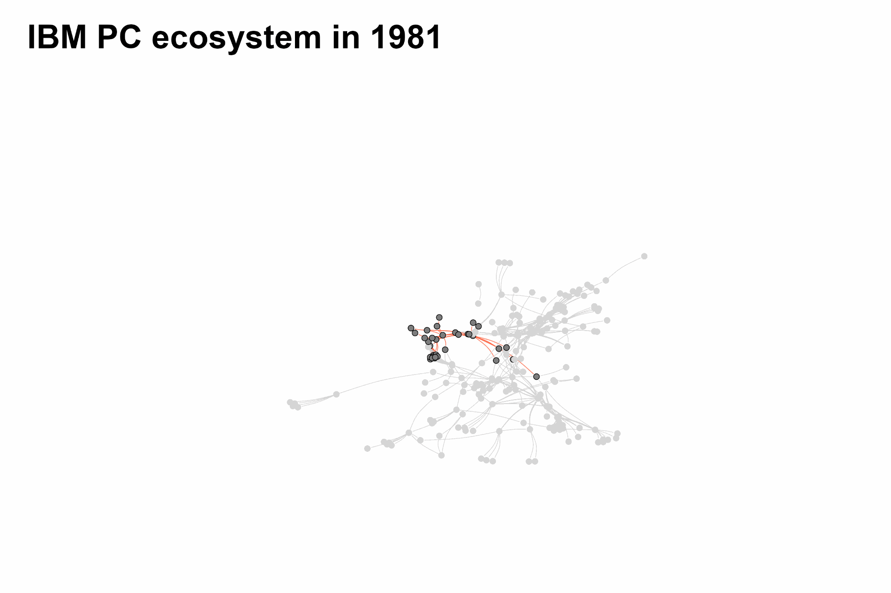

Publications
Bria, F., Timmers, P. and Gernone, F. (2025) ‘EuroStack: a European alternative for digital sovereignty’. Bertelsmann Stiftung.
Gernone, F. and Teece, D. J. (2024) ‘Competing in the age of AI: firm capabilities and antitrust considerations’, in Artificial Intelligence and Competition Policy, edited by A. Abbott and T. Schrepel, pp. 17–34. Paris: Concurrences.
View Abstract
In the 1960s, Nobel Laureate Herbert Simon posited that intelligent systems exhibit their intelligence by achieving their objectives in the face of diverse and evolving circumstances, within certain physiological or computational limits. He argued that both human organizations and computer systems are inherently “artificial” in that they dynamically update in response to changing environments. Artificial Intelligence (AI) is a fundamental enabling technology that has captured the imagination for over half a century and is now becoming a tangible reality. It stands out both quantitatively and qualitatively from other technologies due to its capacity to assimilate tacit knowledge and rival human intelligence. AI’s human-like adaptability makes it an incredibly powerful tool for a variety of applications, promising not only to automate routine tasks, but to revolutionize how businesses operate and compete. This chapter reviews AI’s role as an enabling technology, exploring its impact on organizational capabilities and strategic management. Lastly, it examines some potential issues in competition policy.
Working Papers
Gernone, F. (2025) ‘Coordination and power: a discussion on the information problem in production and competition’. UCL Institute for Innovation and Public Purpose Working Paper Series, IIPP WP 2025-14. ISSN 2635-0122.
Recipient of the 2025 Herbert Simon Prize (EAEPE).
View Abstract
This paper reframes production as an information-processing endeavour where agents form networks of complementary activities coordinated through markets, firms, and cooperative arrangements. It argues that this process entails significant cognitive and computational costs, whose distribution across agents is central to understanding organisation, competition and power. After advancing a taxonomy of interfirm coordination stages and their respective informational requirements, it draws on Ashby’s Law of Requisite Variety to define power as the ability to shift coordination costs onto partners while preserving one’s own strategic flexibility. The analysis is then situated in the context of information technologies which, by altering the costs of processing information and coordinating activities, profoundly affect the structure of production and the character of competition. The resulting concentration of information processing capacity in large platforms raises new policy challenges, which are finally discussed.
Zafar, A., Gernone, F., Andres, P. and Donda, A. (2025) ‘Architectures of Problem Solving: How Network Structures Shape Decision Making’.
Selected as best paper of the 2025 Complexity Global School.
Gernone, F. (2024) ‘Estimating bottleneck power: a network analysis of competition in the early PC industry’. Working paper.
View Abstract
While digital-era competition increasingly unfolds across webs of complementary products rather than within markets, analytical tools to quantify these effects remain underdeveloped. This paper addresses this gap by introducing a new method to measure bottleneck power and estimating its impact on value capture in the early Personal Computer (PC) industry. We build a unique dataset mapping the complementarities between PC products from 1981 to 1987 and apply network analysis to investigate the determinants of firms’ value capture. To quantify bottleneck power, we propose a bespoke centrality measure that captures the extent to which each product serves as an indispensable intermediary within a dense cluster of the network. Our findings show that openness, defined as the share of complementarities with external firms, and dependence on external strategic bottlenecks both reduce value capture. In contrast, firms with higher average bottleneck power are associated with greater financial returns.